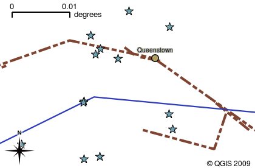

14.4. Lesson: Updating Forest Stands
Now that you have digitized the information from the old inventory maps and added the corresponding information to the forest stands, the next step is to create the inventory of the current state of the forest.
You will digitize new forest stands using an aerial photo. As with the previous lesson, you will use an aerial Color Infrared (CIR) photograph. This type of imagery, where the infrared light is recorded instead of the blue light, is widely used to study vegetated areas.
After digitizing the forest stands, you will add information such as new constraints given by conservation regulations.
The goal for this lesson: To digitize a new set of forest stands from CIR aerial photographs and add information from other datasets.
14.4.1. ★☆☆ Comparing the Old Forest Stands to Current Aerial Photographs
The National Land Survey of Finland has an open data policy that allows you downloading a variety of geographical data like aerial imagery, traditional topographic maps, DEM, LiDAR data, etc. The service can be accessed in English here. The aerial image used in this exercise has been created from two orthorectified CIR images downloaded from that service (M4134F_21062012 and M4143E_21062012).
Open QGIS and set the project’s CRS to ETRS89 / ETRS-TM35FIN in
Add the CIR image
rautjarvi_aerial.tifto the project:Go to the
exercise_data\forestry\folder using your file manager browserDrag and drop the file
rautjarvi_aerial.tifonto your project
Save the QGIS project as
digitizing_2012.qgs
The CIR images are from 2012. You can compare the stands that were created in 1994 with the situation almost 20 years later.
Add the
forest_stands_1994.shplayer created in the previous lesson:Go to the
exercise_data\forestry\folder using your file manager browserDrag and drop the file
forest_stands_1994.shponto your project
Set the symbology for the layer so that you can see through your polygons:
Right click forest_stands_1994
Select Properties
Go to the  Symbology tab
Set Fill color to transparent fill
Set Stroke color to purple
Set Stroke width to
0.50 mm
Review how the old forest stands follow (or not) what you might visually interpret as an homogeneous forest.
Zoom and pan around the area. You probably will notice that some of the old forest stands might be still corresponding with the image but others are not.
This is a normal situation, as some 20 years have passed and different forest operations have been carried out (harvesting, thinning…). It is also possible that the forest stands looked homogeneous back in 1992 to the person who digitized them but as time has passed some forest has developed in different ways. It is also possible that that forest inventory priorities back then were different from those of today.
{kind=link}
Next, you will create new forest stands for this image without using the old ones. Later you can compare them to see the differences.
14.4.2. ★☆☆ Interpreting the CIR Image
Let’s digitize the same area that was covered by the old inventory, limited by the roads and the lake. You don’t have to digitize the whole area, as in the previous exercise you can start with a vector file that already contains most of the forest stands.
Remove the layer
 forest_stands_1994
forest_stands_1994Add the file
exercise_data\forestry\forest_stands_2012.shpto the projectSet the styling of this layer so that the polygons have no fill and the borders are visible
Open Properties dialog of the
forest_stands_2012layerSet Fill color to transparent fill
Set Stroke color to green
Set Stroke width to
0.50 mm

You can see that the northern section of the inventory area is still missing. Your task is to digitize the missing forest stands.
Before you start, spend some time reviewing the forest stands already digitized and the corresponding forest in the image. Try to get an idea about how the stands borders are decided, it helps if you have some forestry knowledge.
Some points to consider:
Which forests have deciduous species (in Finland these are mostly birch forests) and which ones have conifers (in this area these are pine or spruce)? In CIR images, deciduous species usually show up as a bright red color whereas conifers show as a dark green color.
How old is the forest? The size of the tree crowns can be identified in the imagery.
How dense are the different forest stands? A forest stand where a thinning operation has recently been done would show spaces between the tree crowns and should be easy to differentiate from other forest stands around it.
Blueish areas indicate barren terrain, roads and urban areas, crops that have not started to grow etc.
Don’t use zooms too close to the image when trying to identify forest stands. A scale between 1:3 000 and 1:5 000 should be enough for this imagery. See the image below (1:4000 scale):

14.4.3. ★☆☆ Try Yourself: Digitizing Forest Stands from CIR Imagery
When digitizing the forest stands, you should try to get forest areas that are as homogeneous as possible in terms of tree species, forest age, stand density… Don’t be too detailed though, or you will end up making hundreds of small forest stands - and that would not be useful at all. You should try to get stands that are meaningful in the context of forestry, not too small (at least 0.5 ha) but not too big either (no more than 3 ha).
With these points in mind, you can now digitize the missing forest stands.
Set up the snapping and topology options:
Go to
Press
 Enable Snapping and select Advanced Configuration
Enable Snapping and select Advanced ConfigurationCheck the
 forest_stands_2012 layer
forest_stands_2012 layerSet Type to Vertex
Set Tolerance to
10Set Units to pixels
Check the box under Avoid Overlap
Press
 Topological editing
Topological editingChoose
 Follow Advanced Configuration
Follow Advanced ConfigurationClose the pop-up

Select the forest_stands_2012 layer on the Layers list
Click the
 Toggle Editing button to enable editing
Toggle Editing button to enable editingStart digitizing using the same techniques as in the previous lesson. The only difference is that you don’t have any point layer that you are snapping to. For this area you should get around 14 new forest stands. While digitizing, fill in the
StandIDfield with numbers starting at901.When you are finished your layer should look something like:

Now you have a new set of polygons showing the different forest stands in 2012 - as interpreted from the CIR images. However, you are missing the forest inventory data. For that you will need to visit the forest and get some sample data that you will use to estimate the forest attributes for each of the forest stands. You will see how to do that in the next lesson.
You can add some extra information about conservation regulations that need to be taken into account for this area.
14.4.4. ★☆☆ Follow Along: Updating Forest Stands with Conservation Information
For the area you are working in, there are some conservation regulations that must be taken into account when doing the forest planning:
Two locations of a protected species of Siberian flying squirrel (Pteromys volans) have been identified. According to the regulation, an area of 15 meters around the spots must be left untouched.
A riparian forest of special interest that is growing along a stream in the area must be protected. In a visit to the field, it was found that 20 meters to both sides of the stream must be protected.
You have a vector file containing the information about the squirrel locations and another containing the digitized stream running from the North area towards the lake.
From the
exercise_data\forestry\folder, add thesquirrel.shpandstream.shpfiles to the project.Use the
 Open Attribute Table tool to view the
Open Attribute Table tool to view the squirrellayerYou can see that there are two locations that are defined as Siberian flying squirrel, and that the area to be protected is indicated by a distance of 15 meters from the locations.
Let’s more accurately delimitate that area to protect. We will create a buffer around the point locations, using the protection distance.
Open .
Set Input layer to
 squirrel
squirrelSet Distance to
15 metersSet Buffered to
exercise_data\forestry\squirrel_15m.shpCheck
Open output file afer running algorithmClick Run
Once the process is completed, click Close

If you zoom in to the location in the northern part of the area, you will notice that the buffer area extends over two neighbouring stands. This means that whenever a forest operation takes place in that stand, the protected location should also be taken into account.
For the protection of the squirrels locations, you are going to add a new attribute (column) to your new forest stands that will contain information about locations that have to be protected. This information will then be available whenever a forest operation is planned, and the field team will be able to mark the area that has to be left untouched before the work starts.
To join the information about the squirrels to your forest stands, you can use the Join attributes by location algorithm:
Open .
Set Join to features in to
forest_stands_2012In Geometric predicate, check
intersectSet By comparing to to
squirrel_15mSet Join type as Take attributes of the first matching feature only (one-to-one)
Leave unchecked Discard records which could not be joined
Set Joined layer to
exercise_data\forestry\stands_squirrel.shpCheck
Open output file afer running algorithmClick Run
Once the process is completed, you can Close the dialog.

Now you have a new forest stands layer, stands_squirrel.shp
showing the protection information for the Siberian flying squirrel.
Open the attribute table of the
stands_squirrellayerSort the table by clicking on point_pr field in the table header.
You can see that there are some forest stands that have the information about the protection locations. The information in the forest stands data will indicate to the forest manager that there are protection considerations to be taken into account. Then he or she can get the location from the squirrel dataset, and visit the area to mark the corresponding buffer around the location so that the operators in the field can avoid disturbing the squirrels environment.
14.4.5. ★☆☆ Try Yourself: Updating Forest Stands with Distance to the Stream
Following the same approach as for the protected squirrel locations you can now update your forest stands with protection information related to the stream. A few points:
Remember the buffer is
20meters around the streamYou want to have all the protection information in the same vector file, so use
stands_squirrel.shpas the base layerName your output as
forest_stands_2012_protect.shp
Once the process is completed, open the attribute table of the output layer and confirm that you have all the protection information for the riparian forest stands associated with the stream.
When you are happy with the results, save your QGIS project.
14.4.6. In Conclusion
You have seen how to interpret CIR images to digitize forest stands. Of course it would take some practice to make more accurate stands and usually using other information like soil maps would give better results, but you know now the basis for this type of task. And adding information from other datasets resulted to be quite a trivial task.
14.4.7. What’s Next?
The forest stands you digitized will be used for planning forestry operations in the future, but you still need to get more information about the forest. In the next lesson, you will see how to plan a set of sampling plots to inventory the forest area you just digitized, and get the overall estimate of forest parameters.